Troncs
Pour les troncs, à l’intérieur, c’est l’empreinte de l’écorce de l’arbre, et l’extérieur, c’est que je l’ai fait en écho avec l’empreinte de mes doigts qui ont fait les reliefs, les traces comme de l’écorce, le résultat se re-compose comme un arbre —— c’est comme un geste de re-cyclage.
La couleur gris neutre vient de la matière, c’est un mélange des couleurs d’encres sur les papiers journaux. C’est comme les pièces en monochrome de Hans Op de Beeck ou les sculptures de Didier Marcel.
Il y a aussi un très vieil arbre dans le village où je suis né. La légende raconte qu'il a plus de 2 000 ans d'histoire, mais il a malheureusement été incendié en 2004. Il ne reste que le tronc.
La couleur gris neutre vient de la matière, c’est un mélange des couleurs d’encres sur les papiers journaux. C’est comme les pièces en monochrome de Hans Op de Beeck ou les sculptures de Didier Marcel.
Il y a aussi un très vieil arbre dans le village où je suis né. La légende raconte qu'il a plus de 2 000 ans d'histoire, mais il a malheureusement été incendié en 2004. Il ne reste que le tronc.
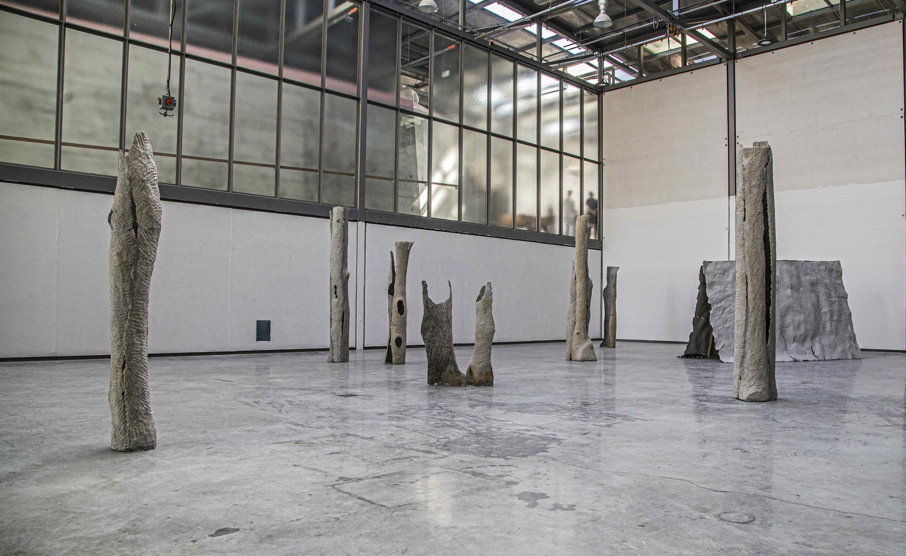
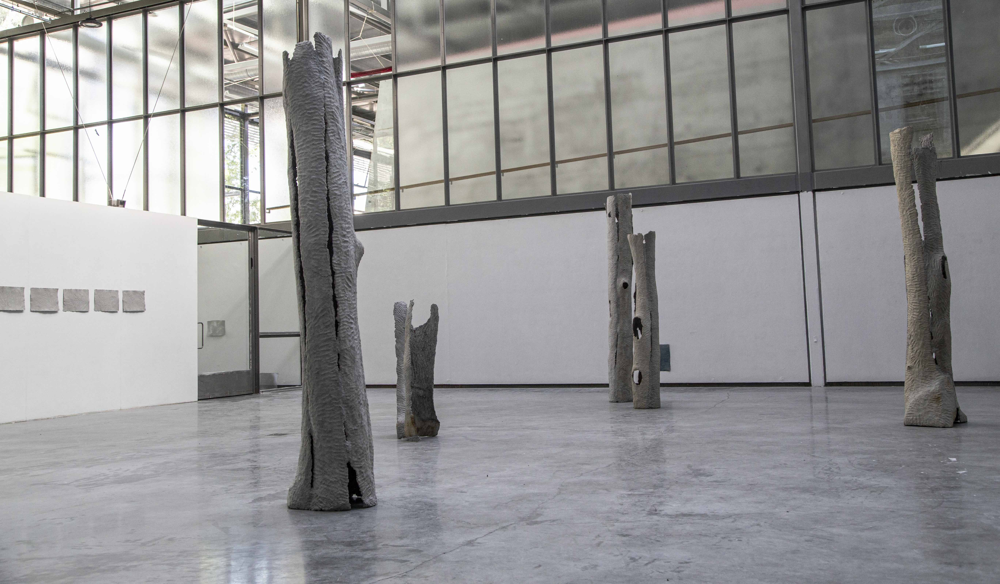
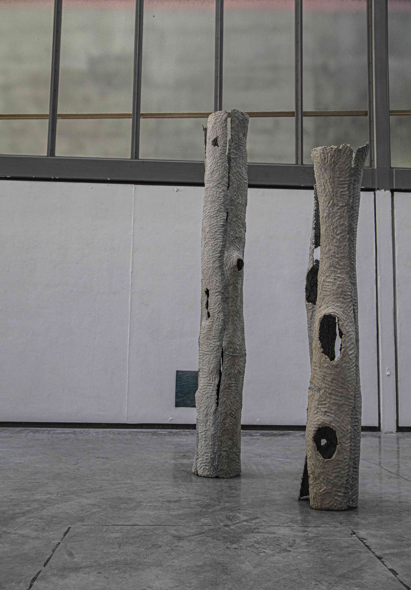
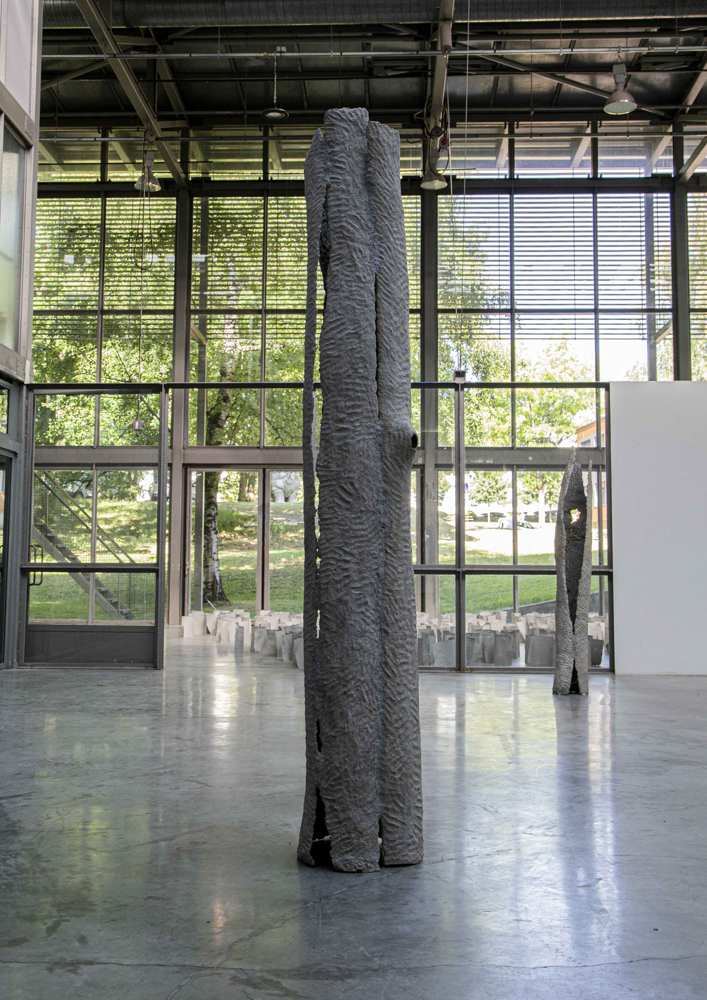
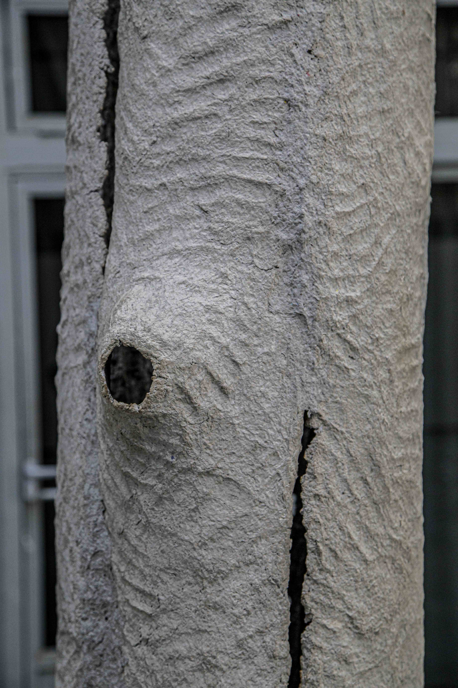
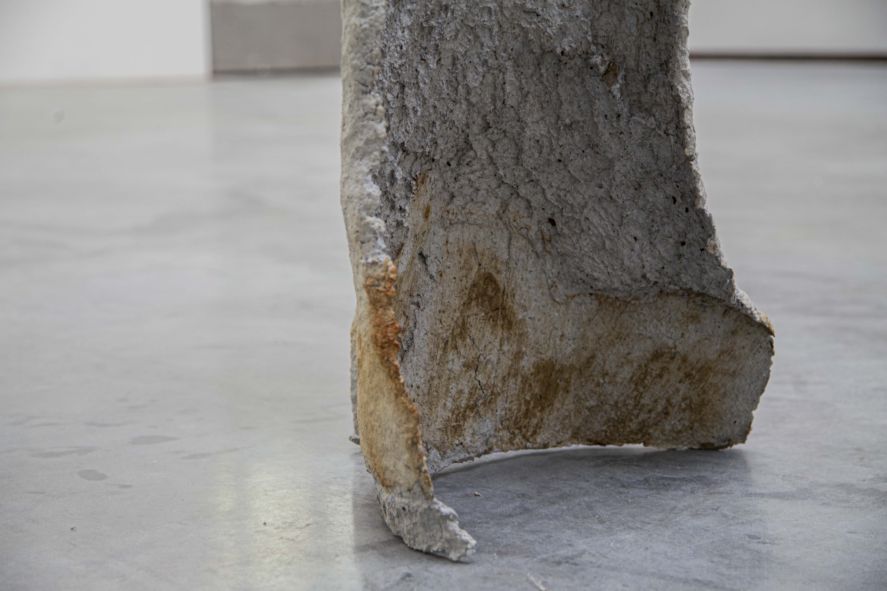
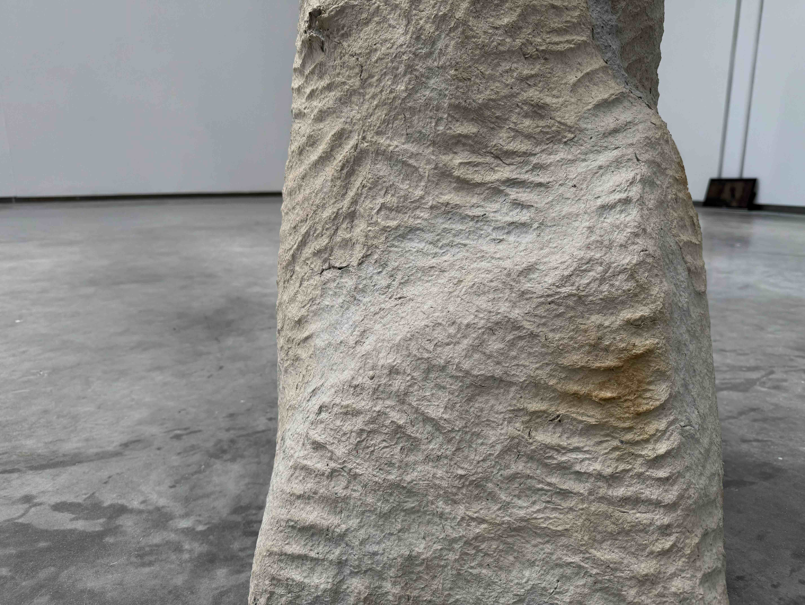
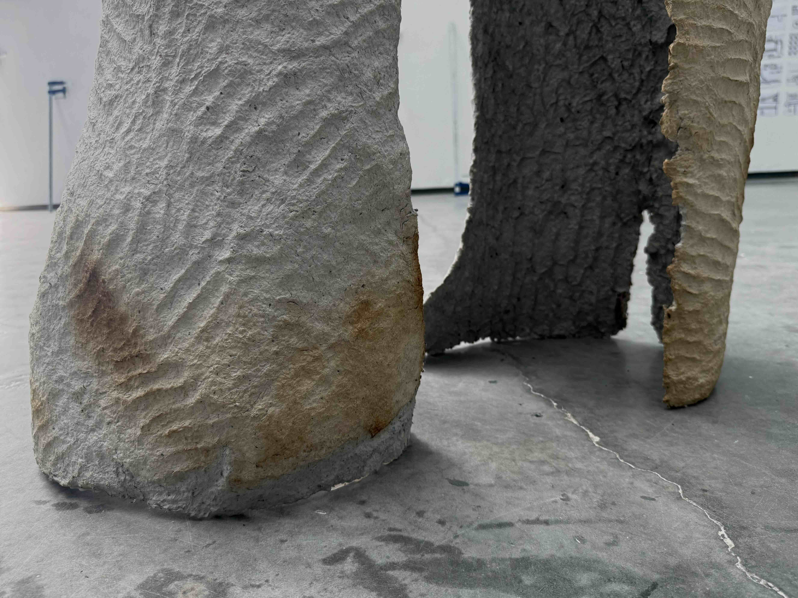
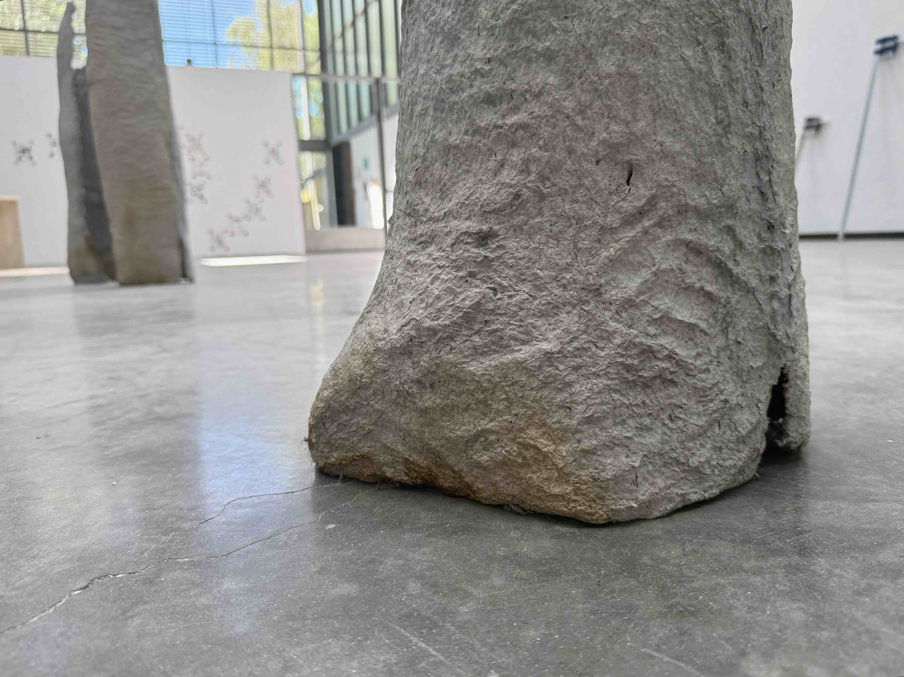
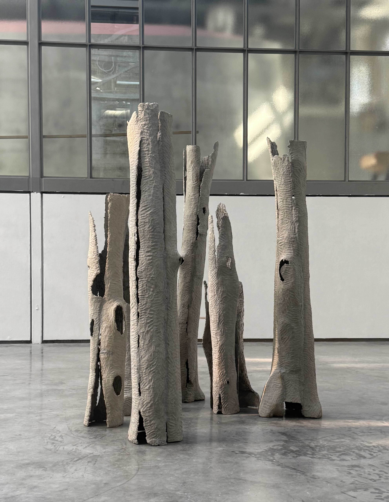
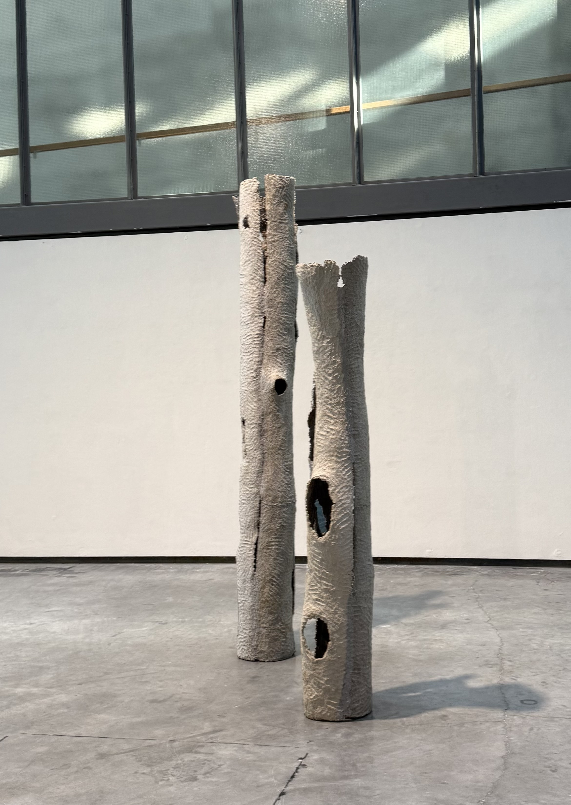
×